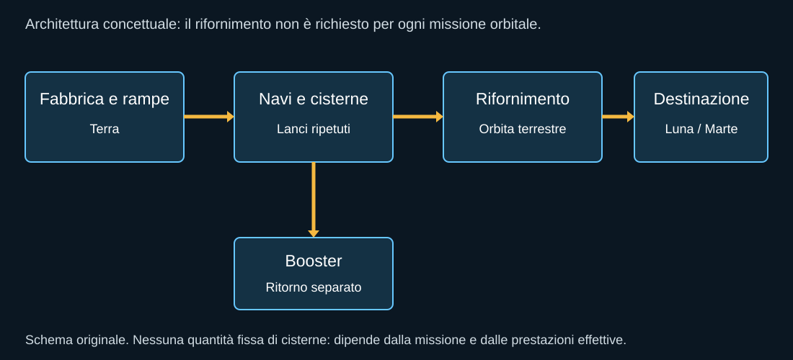

Starship viene spesso descritta con una sola altezza e una sola capacità di carico. È utile per una prima impressione, ma non basta a capire il programma. Il sistema comprende due stadi, infrastrutture, motori differenti per funzione e varianti di nave destinate a missioni che non chiedono le stesse cose.
Super Heavy: portare la nave dove può continuare
Il booster affronta la prima parte della salita attraverso l’atmosfera. Deve accelerare una massa enorme, sopportare carichi e vibrazioni e lasciare alla nave condizioni adatte a continuare. Nella configurazione dei voli considerati usa trentatré motori. Non significa che tutti restino accesi durante ogni fase del ritorno: sequenze, gruppi e durata cambiano con la manovra.
Dopo la separazione il booster non ha la stessa energia della nave che prosegue verso lo spazio. Può invertire la traiettoria, attraversare l’atmosfera e rallentare con i motori. Una parte dei propellenti e dell’hardware serve a questo ritorno. Il recupero è quindi una funzione progettata, non una raccolta fortunata del veicolo dopo aver terminato il lavoro.
Ship: stadio superiore e possibile nave
La Ship compie il lavoro necessario a raggiungere la traiettoria finale. Nei voli descritti il gruppo propulsivo comprende motori adatti al livello del mare e motori ottimizzati per il vuoto. Le versioni future e le varianti non devono essere date per identiche alla configurazione già volata. Una nave per satelliti non coincide con una nave per astronauti o con il lander lunare.
Il vano di carico, lo scudo termico, le superfici aerodinamiche, i serbatoi e gli impianti occupano massa e volume. Una capacità nominale di lancio non dice quanto rimarrà disponibile per un particolare equipaggio, dopo aver aggiunto sistemi vitali, margini e operazioni specifiche.

Il nome non identifica una configurazione unica
| Nome | Funzione | Attenzione |
|---|---|---|
| Super Heavy | Primo stadio, salita iniziale e ritorno. | Il suo recupero non dimostra quello della Ship. |
| Ship per carichi | Trasporto e dispiegamento. | Non automaticamente qualificata per persone. |
| Cisterna | Portare propellenti in orbita. | Configurazione e prestazioni dipendono dal progetto. |
| Deposito | Conservazione e aggregazione dei propellenti. | Non coincide con un trasferimento interno dimostrativo. |
| HLS | Operazioni lunari e atterraggio. | Variante con missione diversa dal rientro terrestre. |
La rampa partecipa alla missione
La torre integra i veicoli, sostiene collegamenti e può ricevere il booster. La gestione dei propellenti stabilisce come e quanto rapidamente si carica il sistema. Le protezioni del pad decidono che cosa rimane utilizzabile dopo il lancio. Il terreno deve sopportare il risultato della spinta senza trasformare ogni partenza in una ricostruzione della base.
Per questa ragione il programma non può essere giudicato guardando soltanto l’oggetto che vola. Una nave funzionante senza una rampa disponibile è ferma. Una rampa integra senza motori verificati è altrettanto ferma. L’affidabilità operativa comprende tutti i componenti che devono essere pronti insieme.
La missione modifica il bilancio
Lasciare un carico in orbita bassa richiede un profilo diverso dal portarlo sulla Luna o su Marte. Se la nave deve tornare, deve conservare o trovare le risorse necessarie. Il riuso completo richiede margini per il ritorno; una missione sacrificabile può usare quei margini in modo diverso. Le capacità pubblicate devono sempre indicare a quale modalità si riferiscono.
Non c’è una contraddizione nel fatto che lo stesso sistema venga sviluppato con missioni differenti. La contraddizione nasce quando si sommano i vantaggi delle varie configurazioni come se una sola nave potesse possederli tutti contemporaneamente. Il libro userà quindi un criterio semplice: specificare la versione e il mestiere, prima di attribuire il risultato al nome Starship.
Fonti pubbliche e tracce
- SpaceX, Starship. Pagina del costruttore: specifiche e obiettivi possono cambiare; consultazione 10 ottobre 2026.
- SpaceX, resoconto Flight 12. Resoconto del costruttore; obiettivi di prova distinti dal successo commerciale.
- SpaceX, resoconto Flight 14. Resoconto del costruttore; obiettivi di prova distinti dal successo commerciale.
- NASA, selezione SpaceX HLS del 16 aprile 2021. Contratto di sviluppo e dimostrazione, non allunaggio già effettuato.